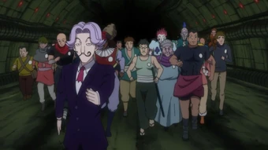
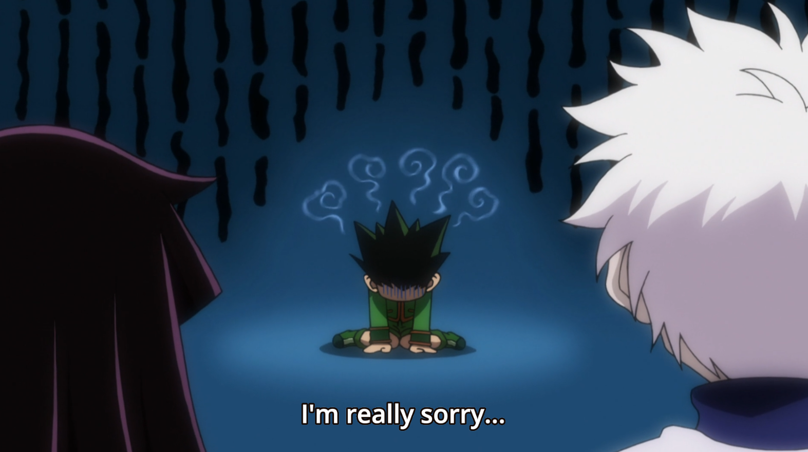
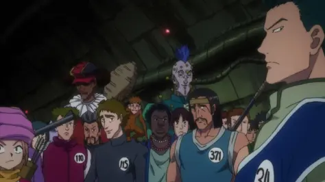
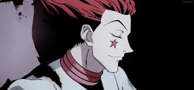
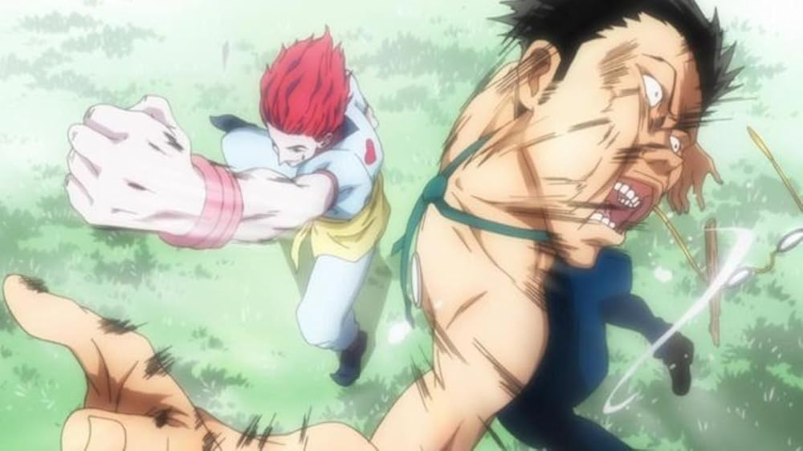

Depois de Anos de treinamento, você decide fazer o exame hunter, você se encontra na frente de um prédio querendo entrar pela esquerda ou direita?
Você entra e vê varios participantes, prefere ficar quieto?
Você encontra Hisoka, ele tem uma presença assustadora

Depois de ficar quieto todo esse tempo, começa o exame hunter

Ninguém fala com você, então você apenas vai embora

Ele Vê potencial em você e manda você voltar e ir para esquerda

Você Acaba Morrendo